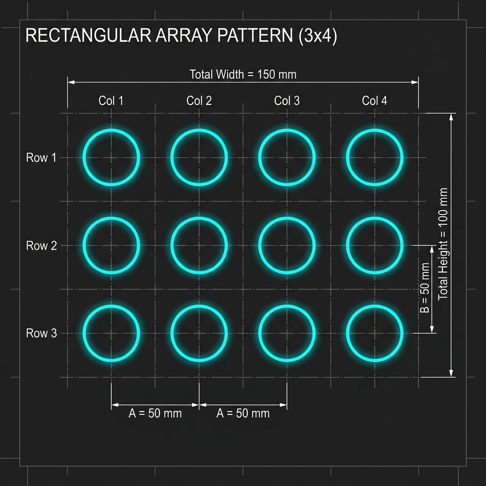
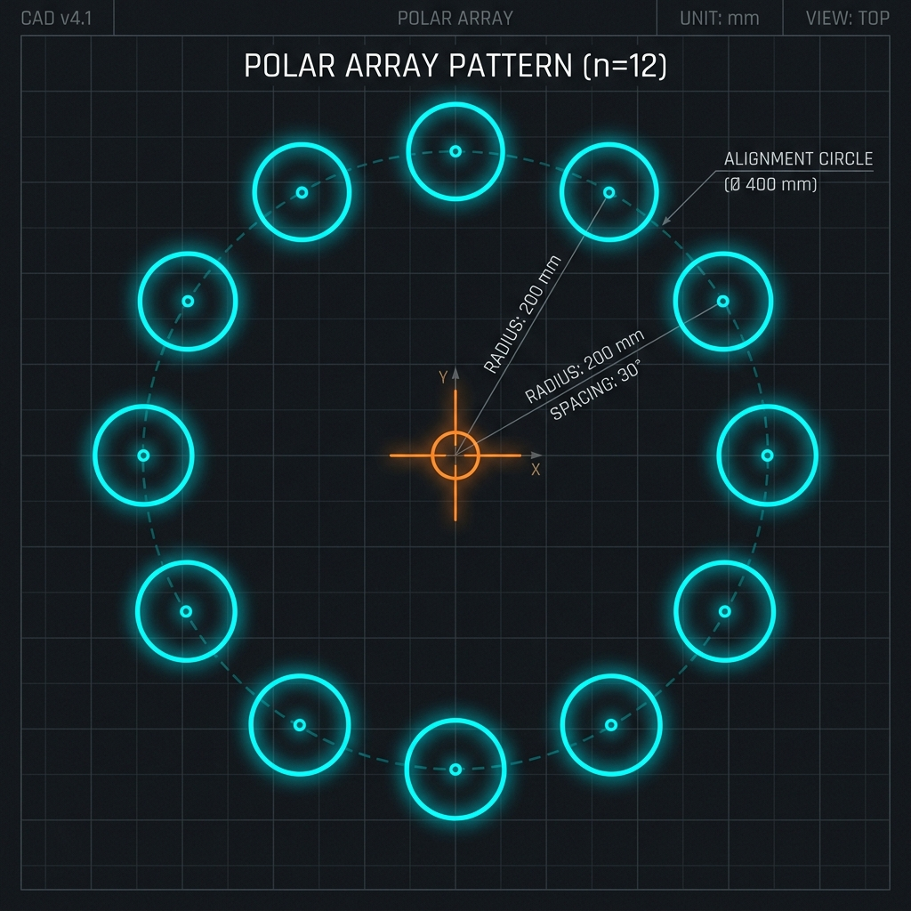

📘 Chương 8
Các Lệnh Biến Đổi & Sao Chép Hình
7 lệnh biến đổi và sao chép: Move, Copy, Rotate, Scale, Mirror, Stretch, Array.
1. Lệnh di dời MOVE (M)
MOVEM
Command: M ↵
Select objects: Chọn đối tượng cần di chuyển
Select objects: ↵ Enter kết thúc chọn
Specify base point: Chọn điểm gốc (điểm bắt đầu di chuyển)
Specify second point: Chọn điểm đích
2. Lệnh sao chép COPY (CO)
COPYCO
Command: CO ↵
Select objects: Chọn đối tượng cần sao chép
Select objects: ↵ Enter kết thúc chọn
Specify base point: Chọn điểm gốc
Specify second point: Chọn vị trí đặt bản sao
Specify second point: Tiếp tục sao chép hoặc Enter kết thúc
ℹ️
Multiple Copy
Trong AutoCAD 2007, lệnh Copy mặc định cho phép sao chép nhiều lần liên tiếp. Nhấn Enter để kết thúc.
3. Lệnh quay đối tượng ROTATE (RO)
ROTATERO
Command: RO ↵
Select objects: Chọn đối tượng
Select objects: ↵
Specify base point: Chọn điểm tâm quay
Specify rotation angle
or [Copy/Reference]: 45 Nhập góc quay (45°)
Góc dương: ngược chiều kim đồng hồ. Góc âm: theo chiều kim đồng hồ. Option Copy cho phép giữ nguyên bản gốc.
4. Lệnh thu phóng đối tượng SCALE (SC)
SCALESC
Command: SC ↵
Select objects: Chọn đối tượng
Select objects: ↵
Specify base point: Chọn điểm gốc thu phóng
Specify scale factor
or [Copy/Reference]: 2 Hệ số: 2 = gấp đôi, 0.5 = nửa
5. Lệnh đối xứng qua trục MIRROR (MI)
MIRRORMI
Command: MI ↵
Select objects: Chọn đối tượng
Select objects: ↵
Specify first point of mirror line: Điểm 1 trục đối xứng
Specify second point of mirror line: Điểm 2 trục đối xứng
Erase source objects? [Yes/No]: N N = giữ bản gốc
⚠️
Biến MIRRTEXT
Nếu giá trị
MIRRTEXT = 1, text sẽ bị đảo ngược. Đặt MIRRTEXT = 0 để text không bị đảo.6. Lệnh dời và kéo giãn STRETCH (S)
STRETCHS
Command: S ↵
Select objects (Crossing): Phải dùng cửa sổ Crossing!
Select objects: ↵
Specify base point: Điểm gốc
Specify second point: Điểm đích (kéo giãn)
⚠️
Quan trọng
Lệnh Stretch bắt buộc phải chọn đối tượng bằng cửa sổ Crossing (kéo từ phải sang trái). Đỉnh nào nằm trong Crossing sẽ bị di chuyển, đỉnh ngoài sẽ giữ nguyên.
7. Lệnh sao chép dãy ARRAY (AR)
ARRAYAR
Có 2 kiểu Array:
a. Rectangular Array (Dãy chữ nhật)
Sao chép đối tượng theo hàng và cột.
| Tham số | Ý nghĩa |
|---|---|
| Rows | Số hàng |
| Columns | Số cột |
| Row offset | Khoảng cách giữa các hàng |
| Column offset | Khoảng cách giữa các cột |
| Angle of array | Góc nghiêng dãy |

Minh họa dãy chữ nhật (Rectangular Array)
b. Polar Array (Dãy tròn)
Sao chép đối tượng xoay quanh tâm.
| Tham số | Ý nghĩa |
|---|---|
| Center point | Tâm xoay |
| Total number | Tổng số bản sao (gồm cả bản gốc) |
| Angle to fill | Góc tổng (360° = vòng tròn đầy) |
| Rotate items | Xoay đối tượng theo hay không |

Minh họa dãy tròn (Polar Array)
📋 Tổng hợp lệnh biến đổi & sao chép
| Lệnh | Viết tắt | Chức năng |
|---|---|---|
Move | M | Di dời đối tượng |
Copy | CO | Sao chép đối tượng |
Rotate | RO | Quay quanh điểm |
Scale | SC | Thu phóng theo tỷ lệ |
Mirror | MI | Đối xứng qua trục |
Stretch | S | Kéo giãn đối tượng |
Array | AR | Sao chép dãy (chữ nhật/tròn) |
8. Grips — Chỉnh sửa nhanh bằng điểm nắm
Click chọn đối tượng (không cần gọi lệnh) → xuất hiện các ô vuông xanh (grips). Click chọn 1 grip → nhấn Space xoay qua các chế độ:
| Chế độ Grip | Chức năng |
|---|---|
| STRETCH | Kéo dãn/dời grip đến vị trí mới |
| MOVE | Di chuyển đối tượng từ grip đó |
| ROTATE | Quay quanh grip |
| SCALE | Thu phóng từ grip |
| MIRROR | Đối xứng qua grip |
💡
Copy nhanh bằng Grips
Khi grip đang "nóng" (hot), nhấn Ctrl rồi click → sao chép đối tượng tại vị trí mới mà không mất bản gốc. Rất nhanh cho sao chép lặp lại.
9. Tùy chọn Reference — Scale/Rotate theo tham chiếu
Khi không biết góc quay chính xác nhưng biết 2 điểm chuẩn:
Command: RO ↵ → Chọn đối tượng → Base point
Rotation angle [Reference]: R ↵
Reference angle: Click 2 điểm xác định góc cũ
New angle: 0 ← Quay đến góc mới (0 = nằm ngang)
Tương tự với SCALE → option Reference: cho phép scale từ chiều dài gốc sang chiều dài mong muốn.
10. Lệnh ALIGN (AL) — Dời + Xoay + Scale một lần
ALIGNAL
Command: AL ↵ → Chọn đối tượng ↵
First source point: Điểm gốc 1 trên đối tượng
First destination: Điểm đích 1
Second source point: Điểm gốc 2 trên đối tượng
Second destination: Điểm đích 2
Scale objects? [Yes/No]: Y